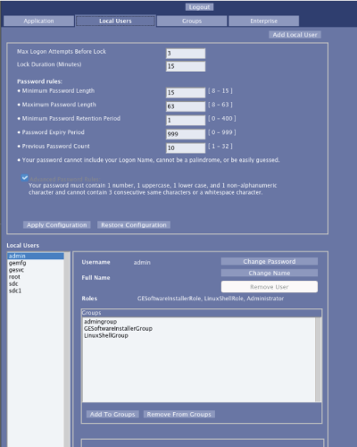

- 00000018WIA30B04450GYZ
- id_20219473.9
- Nov 9, 2023 6:38:48 AM
Configure user accounts for Role Based access controls
EA3 component
About this task
The EA3 component is designed to meet the requirements of the IHE Enterprise User Authentication (EUA) Profile, IHE Personnel White Pages (PWP) Profile, and the audit logging portion of the IHE Audit Trail and Node Authentication (ATNA) Profile. These profiles can be found in the IHE Technical Framework Version 4 (see http://www.ihe.net).
The following roles are available in EA3:
- admingroup allows members within this group to do all administrative activities for the EA3 users and user accounts.
- GESoftwareInstaller group allows members in the group to install software updates as and when they are downloaded by GE.
- GELevel2Group, is available for research sites and this enables Second level SAR and dB/dt as available option.
- ProtocolEdit, allows users in the group to edit site protocols.
- GESystemPreferenceGroup, allows users in the group to change Administration Privilege settings on the System.
- stdgroup is a group for any normal user. Any local user created by default falls into this group. The users in this group do not have special privileges.
- LinuxShellGroup allows members within this group to open the Linux C Shell. The command prompt cannot be opened without.
Procedure
- Click the Local Users tab.
Figure 1. Local Users window (Screen for software version 29) 
Figure 2. Local Users window (Screen for software version 30) 